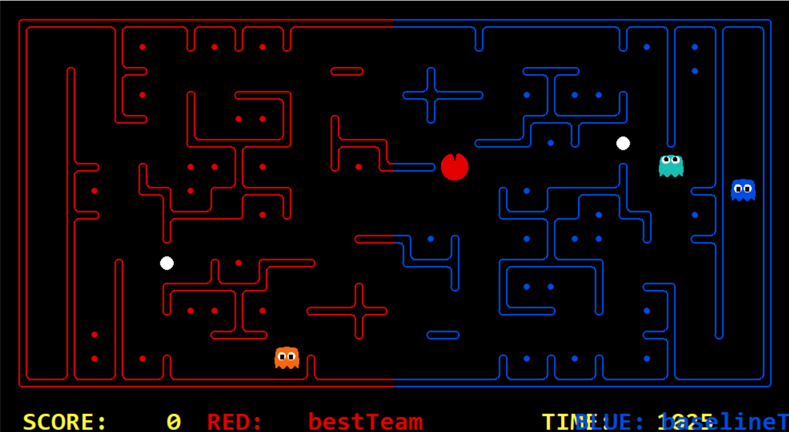

Project Overview
We never get enough of the retro classic game Pacman, and capture the flag is a fun extention to the classig. Here, the pacmen are thrown into a team-based arena, collecting food pellets from the opponent's side. The team that ends up with the most collected food pellets wins.
In this project we designed a team of intelligent agents in Python that can play both offense and defense, switching roles when necessary. We tested various algorithms and techniques to setup an optimal agent in the end to participate in a tournament. In the end, we found that our heuristics agents worked better than the famous MCTS agent.
Features
- MCTS Agent: We built an agent that closely follows the traditional Monte Carlo Tree Search (MCTS) algorithm. At each step, it simulates multiple random gameplay rollouts to evaluate possible future outcomes. It then picks the move that leads to the best average result across all simulations.
- Defense Agent: This agent uses a set of heuristics to guard the border between the two sides. It stays positioned near the middle and becomes alert the moment an opponent crosses over. Once an intruder is detected, the agent actively pursues them until they are caught.
- Offense Agent: This agent immediately crosses into the opponent's territory and focuses entirely on collecting as many food pellets as possible, using heuristics to prioritize high-value paths and avoid threats.
- Combined Agent: Finally, we created an agent that blends both offensive and defensive behavior. Instead of collecting food blindly, this agent aims to maintain a score advantage. It only crosses into enemy territory when the team is behind, and returns to defense once the lead is regained.
Technical Details
- Programming: Python
- Python Capture the Flag project by John DeNero and Dan Klein from UC Berkely[1].
Reflection
With this project we demonstrated the design of intelligent, and adaptive agents that are capable of handling real-time strategy decisions. Both the application of MCTS and heuristic agents provided insights into effective AI strategies for complex games. It really shows the possibilites of AI algorithms in classic retro games, to solve fun competitions. In the future, we would like to further adapt our agent to make it more offensive and aim for the win.
References
- Christian Shelton (cshelton). cshelton/pacman-ctf: Python3 version of UC Berkeley’s CS 188 Pacman Capture the Flag project. GitHub: https://github.com/cshelton/pacman-ctf